Fun Projects for your LEGO� MINDSTORMS� NXT!
|
|
Fun Projects for your LEGO� MINDSTORMS� NXT! |
| Electric Guitar |
|

1
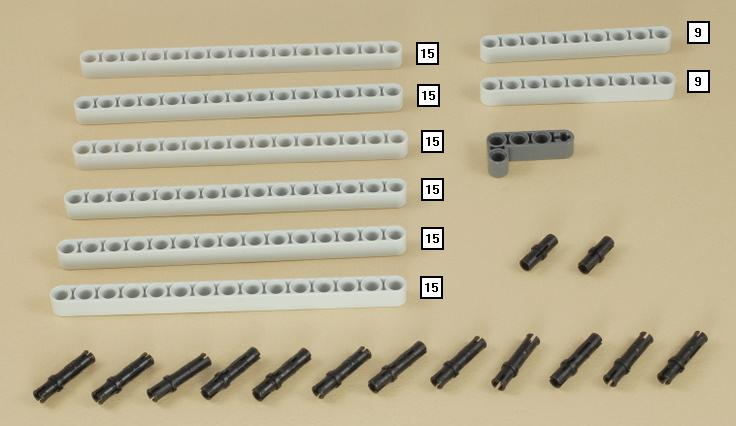
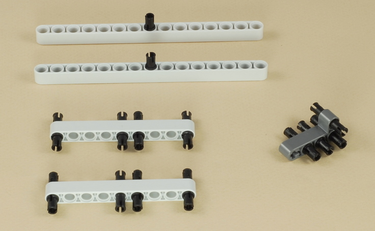
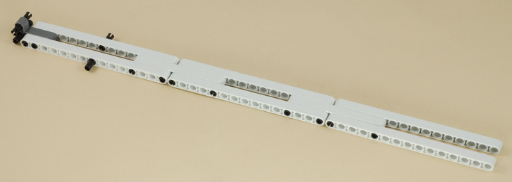
2
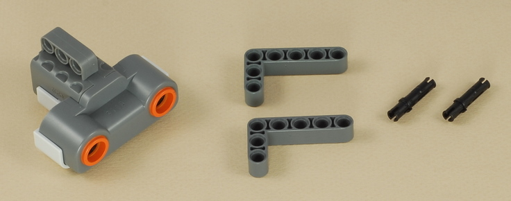
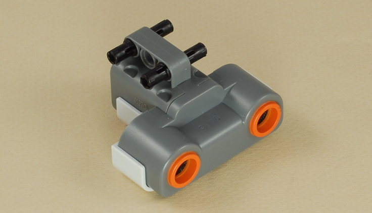
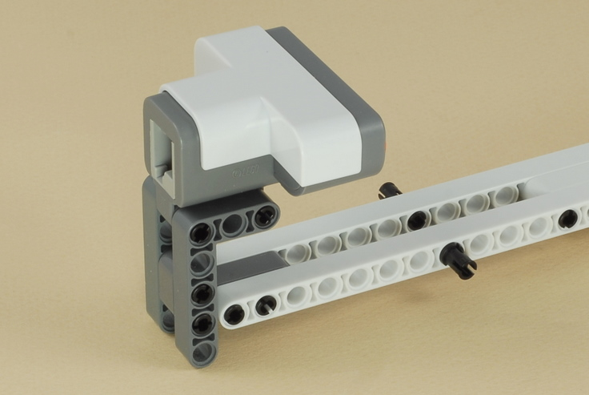
3
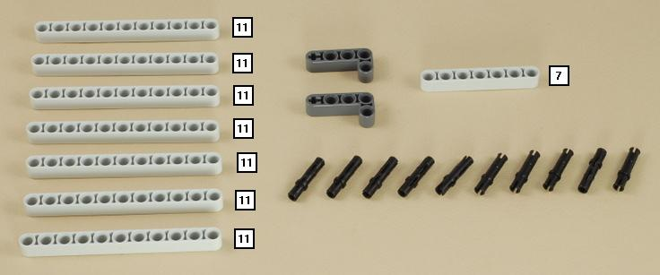
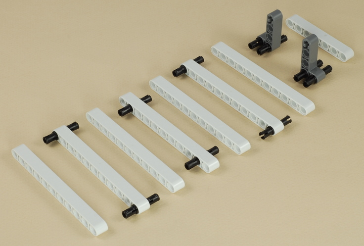

4
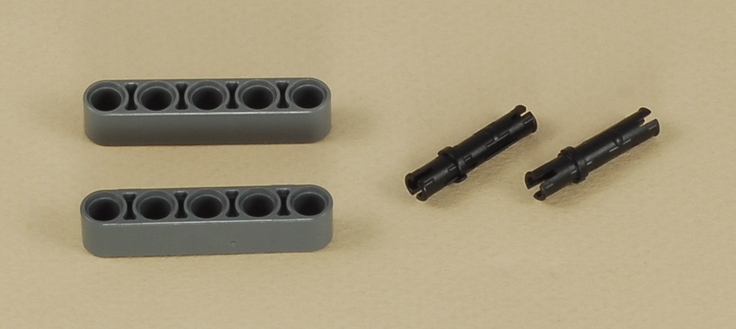
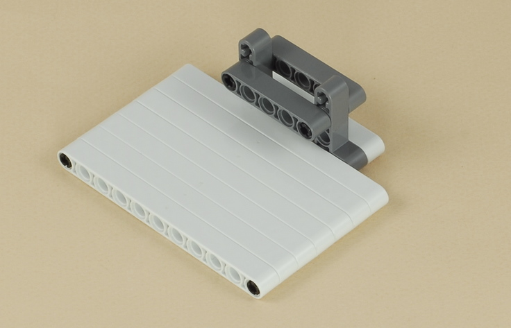
| The ultrasonic sensor needs something hard and flat to measure distance to, so that is what this sliding plate is for. The ultrasonic sensor does not work when something is too close to it, so the two pegs sticking out of the neck near the sensor prevent the plate from getting closer than about 1 inch from the sensor. |
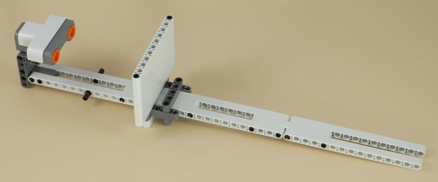
5

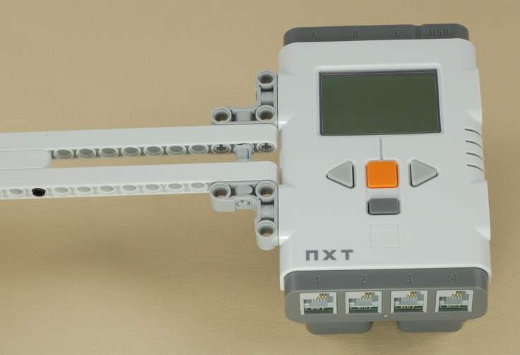
6
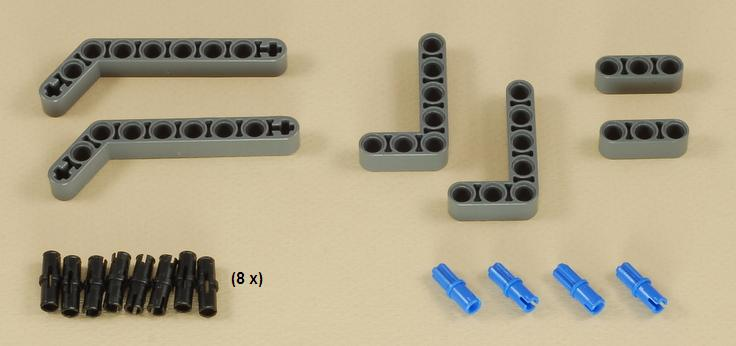
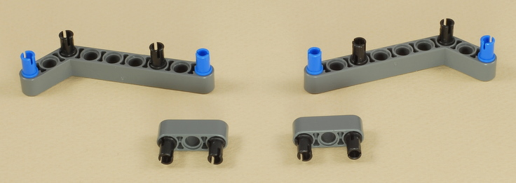
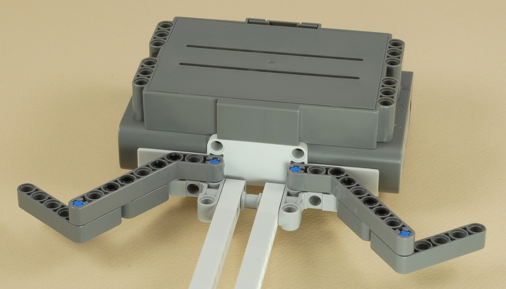
7
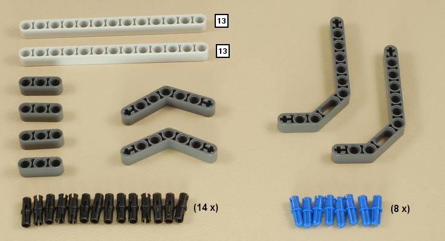
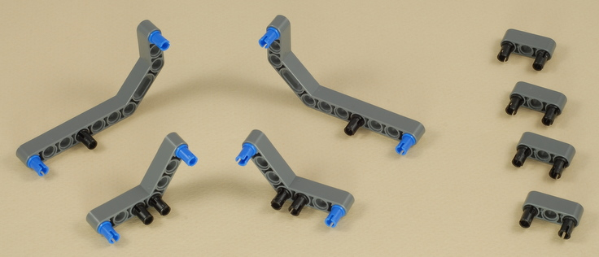
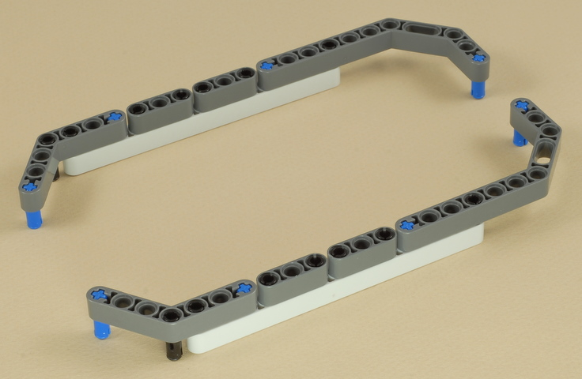
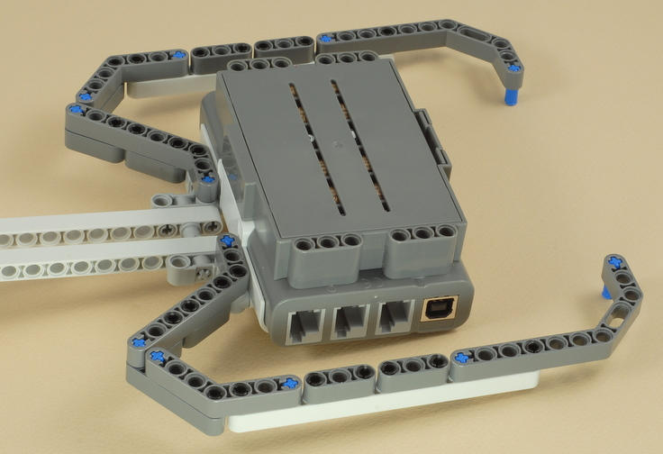
8
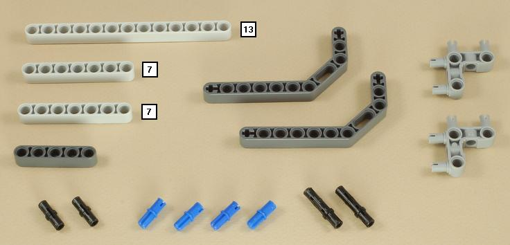
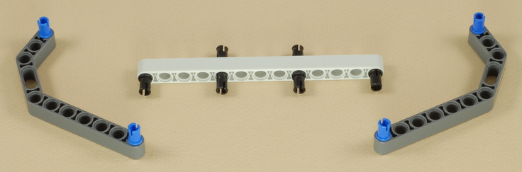
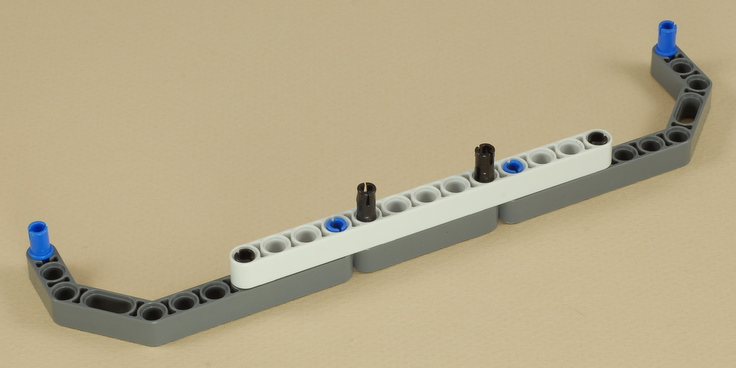
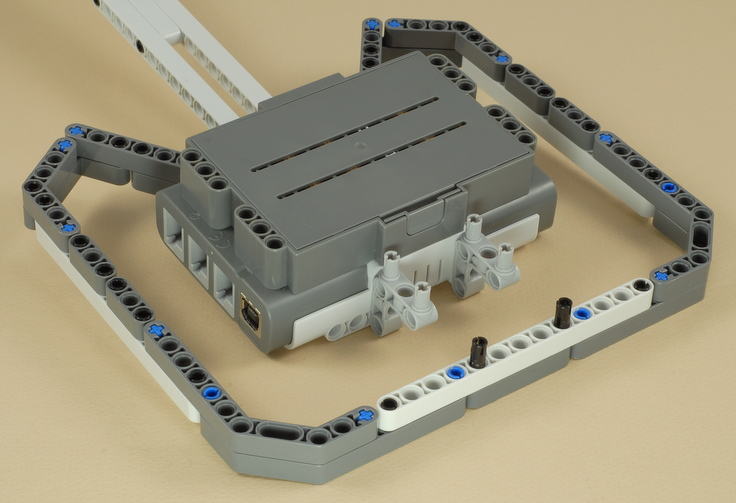
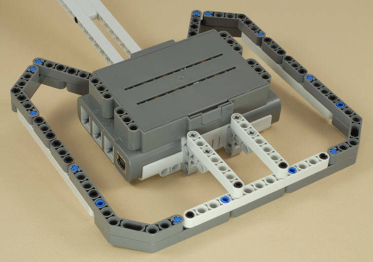
9
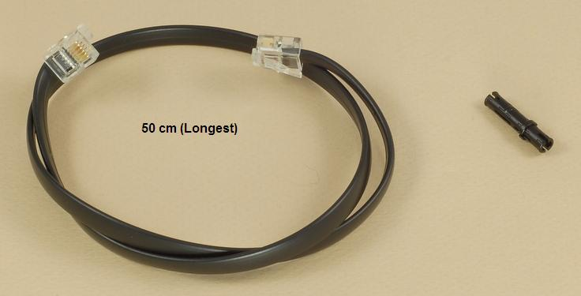
| First connect the wire to the ultrasonic sensor as shown below. | Then connect the wire to port 4 on the NXT (this will be a tight fit), then route around the peg as shown. |
| 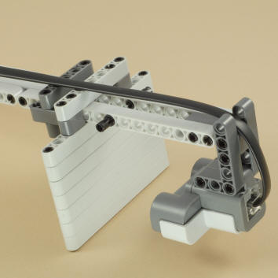 | 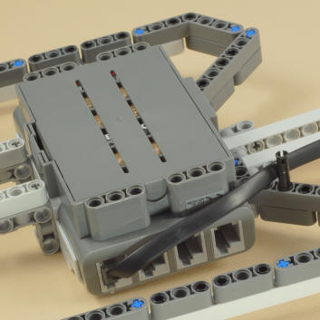 |
|
Electric Guitar Programming There are two programs to choose from for your electric guitar.
|
How to Play Your Electric Guitar
| 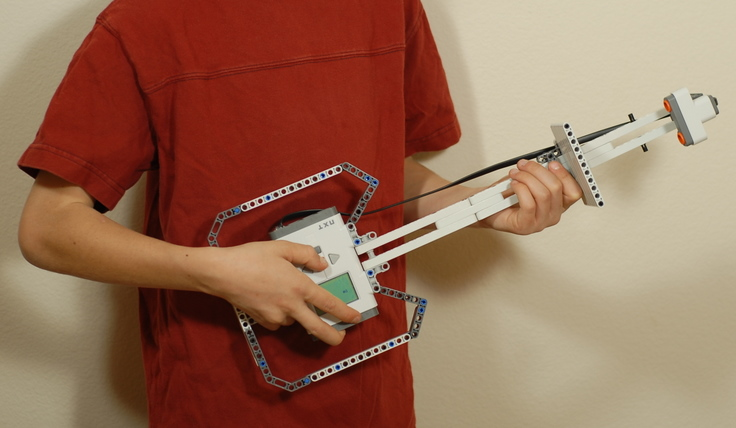 | 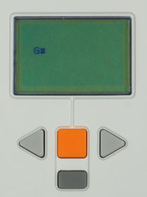 |
| Hold the sliding plate with your left hand with your hand on the side away from the ultrasonic sensor. Slide the plate up and down the guitar's neck to select the note to play, then press the orange button on the NXT with your right thumb to play the note. | The NXT�s display will show the name of the note or chord that will be played as the sliding plate moves. |
| The Electric Guitar's
Notes The programs
for the electric guitar play a series of notes or chords known as the
�blues scale�.
On a piano keyboard, these notes are: Using these notes, it is easy to improvise or "play around" even if you don't know anything about music. |
Challenges
|
|
Copyright
�
2007-2009 by Dave Parker. All rights reserved. |